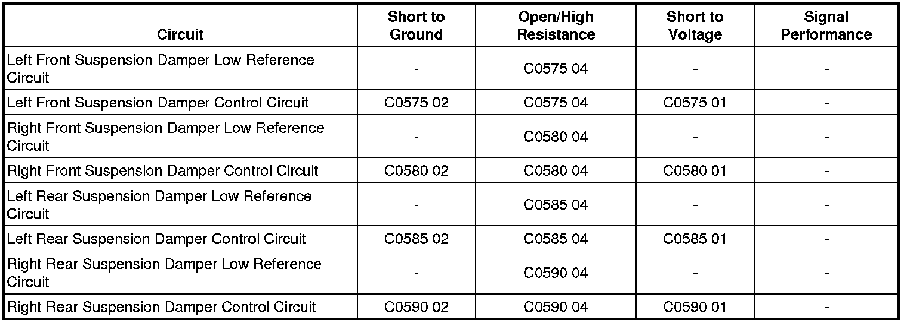

C0590
DTC C0575, C0580, C0585, or C0590
Diagnostic Instructions
* Perform the Diagnostic System Check - Vehicle (Initial Inspection and Diagnostic Overview) prior to using this diagnostic procedure.
* Review Strategy Based Diagnosis (Initial Inspection and Diagnostic Overview) for an overview of the diagnostic approach.
* Diagnostic Procedure Instructions (Initial Inspection and Diagnostic Overview) provides an overview of each diagnostic category.
DTC Descriptors
DTC C0575 01
- Left Front Actuator Circuit - Short To Battery
DTC C0575 02
- Left Front Actuator Circuit - Short To Ground
DTC C0575 04
- Left Front Actuator Circuit - Open Circuit
DTC C0580 01
- Right Front Actuator Circuit - Short To Battery
DTC C0580 02
- Right Front Actuator Circuit - Short To Ground
DTC C0580 04
- Right Front Actuator Circuit - Open Circuit
DTC C0585 01
- Left Rear Actuator Circuit - Short To Battery
DTC C0585 02
- Left Rear Actuator Circuit - Short To Ground
DTC C0585 04
- Left Rear Actuator Circuit - Open Circuit
DTC C0590 01
- Right Rear Actuator Circuit - Short To Battery
DTC C0590 02
- Right Rear Actuator Circuit - Short To Ground
DTC C0590 04
- Right Rear Actuator Circuit - Open Circuit
Diagnostic Fault Information

Circuit/System Description
The electronic suspension control module (ESCM) commands variable levels of pulse width modulated current to each damper in response to rough road, or abrupt steering maneuver driving conditions. The ESC module continuously compares each dampers command state with the state of their feedback circuits to ensure they agree.
Conditions for Running the DTC
* Battery voltage is between 9-16 volts.
* Ignition ON for 30 seconds
Conditions for Setting the DTC
* The damper coil or the circuits to the coil are shorted to ground, shorted to voltage, or open for 3 consecutive ignition ON cycles.
* The vehicle must be driven over 4.8 km/h (3 mph).
Action Taken When the DTC Sets
* The driver information center (DIC) displays the SERVICE SUSPENSION SYSTEM message.
* If the DTC symptom 01 is stored, the electronic suspension control (ESC) system is disabled.
* If the DTC symptom 02 or 04 is stored, the suspect damper is disabled.
Conditions for Clearing the DTC
* A current DTC will clear on the next consecutive malfunction-free ignition cycle.
* A history DTC will clear after 50 consecutive malfunction-free ignition cycles or the DTC can be cleared with the scan tool.
Reference Information
Schematic Reference
Electronic Suspension Control Schematics (Electronic Suspension Control)
Connector End View Reference
Component Connector End Views (Connector Views)
Description and Operation
Electronic Suspension Control Description and Operation (Electronic Suspension Control Description and Operation)
Electrical Information Reference
* Circuit Testing (Component Tests and General Diagnostics)
* Connector Repairs (Component Tests and General Diagnostics)
* Testing for Intermittent Conditions and Poor Connections (Component Tests and General Diagnostics)
* Wiring Repairs (Component Tests and General Diagnostics)
Scan Tool Reference
Control Module References (Programming and Relearning) for scan tool information
Circuit/System Verification
Ignition ON, with the scan tool command the damper actuators ON and OFF while jouncing the vehicle in the front and rear. The suspension should change stiffness when commanded between the ON and OFF state.
Circuit/System Testing
1. Ignition OFF, disconnect the harness connector at the applicable suspension damper.
2. Ignition OFF, test for less than 1.0 ohm between the low reference circuit terminal B and ground.
• If greater than the specified value, test the low reference circuit for an open/high resistance. If the circuit tests normal, replace the ESC module.
3. Ignition OFF, perform this setup step in the following order:
1. Connect a test lamp between the control circuit terminal A and the low reference circuit terminal B.
2. Ignition ON, with a scan tool, clear all ESC module DTCs.
4. Command the applicable damper ON and OFF with a scan tool. The test lamp should turn ON and OFF when changing between the commanded states.
• If the test lamp is always ON, test the control circuit for a short to voltage. If the circuit tests normal, replace the ESC module.
• If the test lamp is always OFF, test for a short to ground or an open/high resistance on the control circuit. If the circuit tests normal, replace the ESC module.
5. If all circuits test normal, test or replace the applicable suspension damper.
Component Testing
1. Ignition OFF, disconnect the harness connector at the applicable suspension damper.
2. Test for less than 2 ohms of resistance between the control circuit terminal and the low reference circuit terminal of the applicable suspension damper.
• If not within the specified range, replace the applicable suspension damper.
Repair Instructions
* Shock Absorber Replacement (Shock Absorber Replacement)
* Suspension Position Calibration (Programming and Relearning)
* Control Module References (Programming and Relearning) for ESC replacement, setup, and programming
Repair Verification
1. Install any components or connectors that have been removed or replaced during diagnosis.
2. Perform any adjustment, programming or setup procedures that are required when a component or module is removed or replaced.
3. Clear the DTCs.
4. Use the scan tool Diagnostic Counter Reset output control function to bypass the 3 consecutive ignition cycle requirement for setting a DTC. This will ensure that if a DTC was to be reset during the repair verification process, it will be displayed on the scan tool.
5. Turn OFF the ignition for 60 seconds.
6. Turn ON the ignition.
7. If the repair was related to a DTC, duplicate the Conditions for Running the DTC and use the Freeze Frame/Failure Records, if applicable, in order to verify the DTC does not reset. If the DTC resets or another DTC is present, refer to the Diagnostic Trouble Code (DTC) List - Vehicle (Diagnostic Trouble Code Descriptions) and perform the appropriate diagnostic procedure